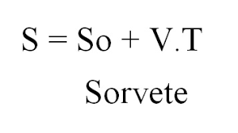
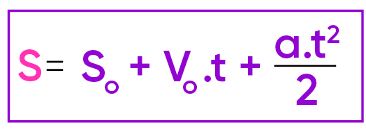
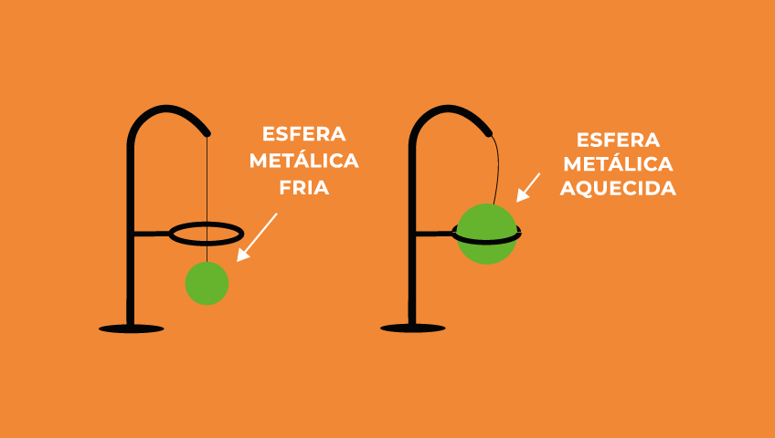
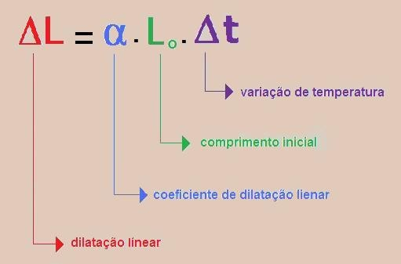
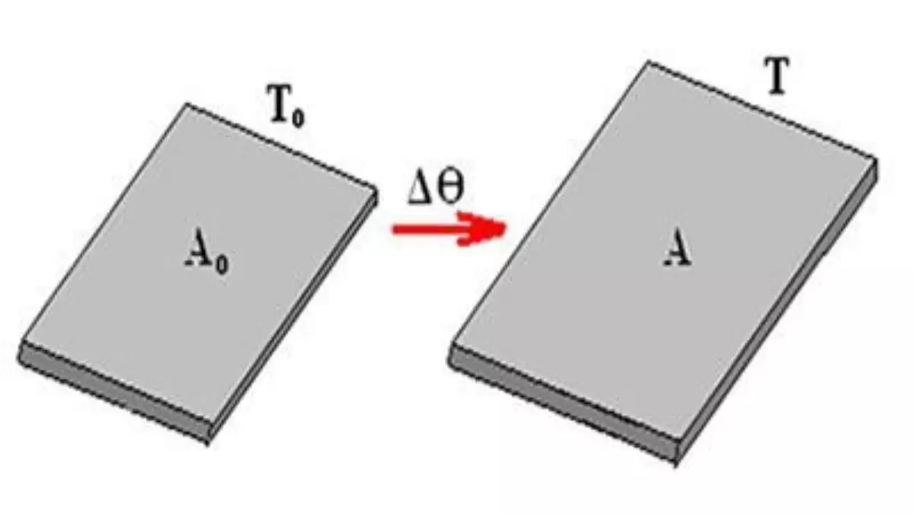
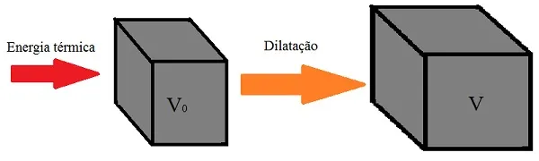
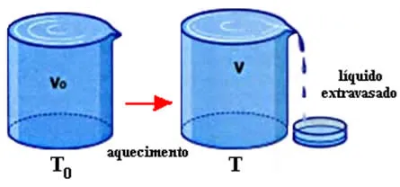

O que é MRU?
Em linha reta e no mesmo ritmo. Corpos que se deslocam em trajetória retilínea
e com velocidade constante – ou seja, sem aceleração – estão em movimento
retilíneo uniforme, ou MRU. Corpos em MRU percorrem sempre a mesma distância
em um mesmo intervalo de tempo.
O que é MRUV?
O movimento retilíneo uniformemente variado, ou MRUV, é o que segue uma trajetória
retilínea e apresenta uma alteração uniforme no módulo de velocidade. É um movimento
com aceleração diferente de zero e constante – a velocidade do corpo aumenta ou diminui
de maneira uniforme ao longo do percurso.
Formulas
O MRU tem como formula a posição num instante t qualquer é dada pela função horária
da posição: S (t) = S0 + v .
O MRUV tem como formula a equação que fornece a velocidade do corpo em um instante qualquer
é a chamada função horária da velocidade: v (t) = v0 + a .
 Tipos de dilatação térmica
Vamos citar aqui 4 tipos de dilatação térmica, a dilatação térmica linear, a dilatção térmica superficial, a dilatação térmica volumétrica e a dilatação dos líquidos.
Dilatação Térmica Linear
Dilatação térmica linear é um fenômeno em que um corpo de formato alongado sofre um aumento em seu comprimento por conta de um aumento de temperatura. A dilatação sofrida por um corpo depende de fatores como a variação de temperatura sofrida e o coeficiente de dilatação característico de cada substância.
Dilatação Térmica Supercial
Dilatação superficial é o fenômeno que provoca um aumento na área dos sólidos. Quando sujeitos a grandes variações de temperatura, alguns materiais, especialmente aqueles que apresentam coeficientes de dilatação superficial elevados, expandem-se, de modo que suas dimensões aumentam.
Dilatação Térmica Volumétrica
Dilatação Volumétrica é o aumento de um corpo submetido a aquecimento térmico que ocorre em três dimensões - altura, comprimento e largura. Quando aquecidos, os átomos que constituem os corpos se agitam, de modo que aumentam o espaço ocupado entre eles e, assim, os corpo se dilatam, ou incham.
Dilatação Térmica dos Líquidos
A dilatação térmica dos líquidos ocorre quando eles são aquecidos. Esse fenômeno decorre do ganho da energia cinética das moléculas que compõem o líquido, uma vez que, movendo-se mais rapidamente, elas passam a ocupar um volume maior.
